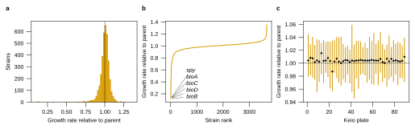

The E. coli datasets
Four built Escherichia coli K-12 datasets load with one constructor call each. This page is the overview: what each dataset holds, how to load it, and one figure of its values. The full walkthrough, with every record, table and plotting cell and its output, is a Jupyter notebook:
Dataset |
Loader |
Label of one record |
Records |
Values per record |
Store slug |
|---|---|---|---|---|---|
Campos 2018, growth rate |
|
maximal growth rate relative to the parent strain |
3,664 |
1 |
|
Campos 2018, imaging |
|
cell-shape and cell-cycle features |
3,664 |
15 |
|
Babu 2014, genetic interaction |
|
S-score of a double mutant |
42,705 |
1 |
|
Fuhrer 2017, metabolome |
|
modified z-score per detected ion |
3,806 |
7,534 |
|
Setup
Install torchcell into a Python 3.13 environment (Installation) and set TC_DATA_URL before constructing a loader, so the loader downloads its built store and does not build it from the publisher’s files. Downloading the E. coli archives covers the archives, their sizes and the check against the release.
import os
from torchcell.endpoint_http import DEFAULT_URL
os.environ.setdefault("TC_DATA_URL", DEFAULT_URL)
Growth rate (Campos 2018)
One record per strain of the Keio collection, the single-gene deletion strains of E. coli K-12 BW25113. The label is the strain’s maximal growth rate in M9 medium with casamino acids and glucose at 30 °C, as a ratio to the parent strain, so the reference level is 1.0.
from torchcell.datasets.ecoli.campos2018 import GrowthRateCampos2018Dataset
dataset = GrowthRateCampos2018Dataset(root="data/torchcell/ecoli_growth_rate_campos2018")
record = dataset[0] # a dict: experiment, reference, publication


Fig. 8 Growth rate of the Keio strains in GrowthRateCampos2018Dataset. a, strains per 0.02-wide bin of growth rate relative to the parent, with the parent level of 1.0 dashed. b, the strains ranked from slowest to fastest, with the five slowest named. c, the median (dot) and the interquartile range (bar) of the strains on each Keio plate.
Cell shape and cell cycle (Campos 2018)
The same strains from the same imaging screen. Each record stores cell-shape means and cell-cycle features under the symbols the paper gives them, and the coefficients of variation of the shape features. A strain with no nucleoid channel holds 9 features and not 15.
from torchcell.datasets.ecoli.campos2018 import MorphologyCampos2018Dataset
dataset = MorphologyCampos2018Dataset(root="data/torchcell/ecoli_morphology_campos2018")
record = dataset[0] # a dict: experiment, reference, publication

Fig. 9 Cell shape of the Keio strains in MorphologyCampos2018Dataset, one point or count per strain. a, strains per 0.04 µm bin of mean cell length. b, mean cell width against mean cell length. c, mean cell area against the growth rate of the same strain from GrowthRateCampos2018Dataset.
Genetic interactions (Babu 2014)
One record per double mutant of the released high-confidence set. The genotype lists two deletions, one from a donor strain and one from the recipient array, and the label is the pair’s S-score: negative for an aggravating interaction, positive for an alleviating one.
from torchcell.datasets.ecoli.babu2014 import GeneInteractionBabu2014Dataset
dataset = GeneInteractionBabu2014Dataset(root="data/torchcell/gene_interaction_babu2014")
record = dataset[0] # a dict: experiment, reference, publication

Fig. 10 S-scores in GeneInteractionBabu2014Dataset. a, gene pairs per unit-wide bin of S-score, negative and positive scores colored apart. The release holds only the high-confidence pairs, which leaves the gap around zero. b, genes by the number of scored pairs each takes part in, on logarithmically spaced bins. c, positive against negative pairs per gene, one point per gene, on axes that are linear from 0 to 1 and logarithmic above.
Metabolome (Fuhrer 2017)
One record per Keio strain. The label maps each detected ion to a modified z-score, with the same ions in the same order in every record, so the labels stack into one strains-by-ions matrix. preprocess/ions.csv in the store gives the mass-to-charge ratio of each ion.
from torchcell.datasets.ecoli.fuhrer2017 import MetabolomeFuhrer2017Dataset
dataset = MetabolomeFuhrer2017Dataset(root="data/torchcell/metabolome_fuhrer2017")
record = dataset[0] # a dict: experiment, reference, publication

Fig. 11 Modified z-scores in MetabolomeFuhrer2017Dataset. a, all strain and ion values per 0.5-wide bin, on a logarithmic count axis. b, strains by the number of ions whose z-score is beyond 5 in absolute value, in bins of 10 ions. c, for each ion, the number of strains beyond 5 against the ion’s mass-to-charge ratio, colored by ionization mode.
Provenance
Notebook:
experiments/034-showcase-datasets/notebooks/ecoli_datasets.ipynb, assembled byexperiments/034-showcase-datasets/scripts/ecoli_download_tutorial_page.pyfrom the blocks ofecoli_download_tutorial.py, the text each block printed in one run, and the figures that run drew.The figures on this page are the same run’s, 179 mm wide with 7 pt Arial text and colors from
torchcell.utils.PLOT_PALETTE.The printed output was byte-identical on a repository checkout and on a new environment installed from PyPI (Install timings and release checks).